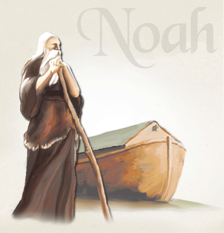

< 신천지 소개 >
- 약속의 목자
- 나 예수는 교회들을 위하여 내 사자를 보내어 이것들을 너희에게 증거하게 하였노라···[계 22:16]
- 6천 년, 하나님의 구원의 역사
- 나는 알파와 오메가요 처음과 나중이요 시작과 끝이라 [계 22:13]
여호와께서 말씀하시기를 내가 자식을 양육하였거늘 그들이 나를 거역하였도다.
소는 그 임자를 알고 나귀는 주인의 구유를 알건마는 이스라엘은 알지 못하고
나의 백성은 깨닫지 못하는도다 하셨도다.
슬프다. 범죄한 나라요 허물 진 백성이요 행악의 종자요 행위가 부패한 자식이로다.
그들이 여호와를 버리며 이스라엘의 거룩한 자를 만홀히 여겨 멀리하고 물러갔도다.”
[이사야 1장 2~4절]
-
-
이사야 1장에 기록된 이 말씀은 자녀들을 낳으시고 양육하신 아버지 하나님의 안타까운 마음이 잘 나타 나 있습니다.
하나님은 택하신 백성들이 부패하여 이방에게 포로가 되었을 때 이들을 구원하시고자 선지자(예언의 목자)을 통해 수없이 장래사를 알려 왔고, 구원자 예수님이 오실 것도 전해 왔습니다.
- 그러나 이스라엘은 믿지 않고 자기들의 현실을 알지 못하였으며 자기들이 선민이고 의인인 줄로만 알았습니다. 하나님의 나라와 민족이 없어진 상황에서 결국 하나님께서는 새 나라를 재창조하시기 위해 새 목자를 택하시고, 범죄한 선민과 이방 멸망자들을 심판하셨습니다. 심판이 시작됨으로 이전 한 시대가 끝나고 재창조가 시작되는 것입니다. 하나님께서는 창조와 재창조의 노정을 아담 범죄 이후 오늘에 이르기까지 거듭해 오셨습니다.
-
이사야 1장에 기록된 이 말씀은 자녀들을 낳으시고 양육하신 아버지 하나님의 안타까운 마음이 잘 나타 나 있습니다.
-
- 하나님은 동방의 에덴에서 흙으로 된 아담에게 생기를 주어 생령이 되게 하셨습니다(창 2장).
- 아담 시대
- 아담 세계의 배도와 멸망, 구원받은 노아 가족
-
아담과 하와가 하나님으로부터 천하를 유업으로 받고도 배도하여 뱀 곧 마귀에게 속하였습니다.
이에 하나님은 그들을 에덴 동산에서 쫓아 내셨고(창 3장), 아담 세계에서 떠나셨습니다(창 6장). 떠나신 하나님은 아담의 9대 손 노아에게 임하시고, 노아를 통해 아담 세계를 홍수로 멸망시킬 것을 알리셨으며, 수많은 날 동안 홍수를 피할 배(방주)를 만들게 하셨습니다.
노아는 세상에 홍수가 날 것을 알렸으나 아담 세계 사람들은 노아의 말을 믿지 않았습니다. 하나님은 노아와의 약속대로 죄악 된 아담 세계를 홍수로 심판하셨습니다(창 7장). 노아가 방주를 만드는 것을 보고 ‘미친 짓’이라고 손가락질했을 그들은 노아의 방주를 바라보며 홍수로 죽어갔습니다. 믿지 않은 것을 후회했더라도 때는 이미 늦은 것이었습니다. 아담 세계의 멸망 때 구원받은 것은 오직 노아의 가족 8명뿐이었습니다.
-
- 
- 하나님께서는 아담 세계가 홍수로 멸망받을 때 구원받은 노아의 가족으로 창조의 역사를 시작하셨습니다.
- 노아 시대
- 노아 세계의 배도와 멸망,
아브라함과의 약속과 모세를 통한 구원 -
노아의 가족들이 방주를 타고 구원받아 아라랏 산에서 역사를 시작한(창 8:1~4) 뒤, 아담 세계의 하와가 뱀의 미혹을 받은 것(이 때 뱀이 아담과 하와가 벗은 것을 말해 줌. 창 3:7~13 참고)같이 노아의 둘째아들 함이 뱀의 신(神)을 받아 아버지 노아의 벗은 것을 지적하는 죄를 짓게 되었습니다. 뱀의 미혹을 받은 아담과 하와에게 저주가 내려졌던 것같이 함과 그 아들 가나안에게도 저주가 내려졌습니다.
하나님은 노아의 세계 곧 가나안의 세계가 범죄했을 때 노아의 세계에서 떠나 노아의 10대 손 아브라함에게 나타나시어 그 자손이 이방에서 객이 되었다가 4대 만에 나와 가나안 땅으로 돌아 오게 될 것임을 약속하셨습니다(창 15장). 이로 인해 아브라함의 자손이 애굽에 가게 되었으며, 애굽에 간 지 4대 만에 이스라엘 백성들은 모세를 통해 애굽에서 나왔으며(출 12장), 모세를 이은 여호수아가 노아의 후손인 가나안의 세계를 멸망시키고(정복하고) 다스리게 되었습니다.
-
- 야곱의 열두 아들로 시작하였고, 하나님은 그들과 언약하셨습니다(출 19:5-6, 창 15장).
- 육적 이스라엘 시대
- 육적 이스라엘 세계의 배도와 멸망
-
모세를 이어 가나안을 정복한 여호수아는 세겜에서 역사를 시작하였습니다.
그러나 이들은 언약을 지키지 않고 솔로몬 때 다시 이방 신에게 절하고 섬김으로 그 언약은 파기되었습니다.
이스라엘은 아담같이 언약을 어기고 배도하여 패역함으로(호 6:7) 결국 남북으로 갈라졌고 북쪽의 11지파가 먼저 이방에게 멸망받았습니다(왕상11-12장). 그리고 남은 한 지파인 유다와 예루살렘도 결국 이방에게 멸망받았습니다(사 1장).
-
- 하나님께서는 구약 선지자들에게 장래 일을 보이시고, 전파하게 하셨습니다(암3:7).
- 선지 시대
- 하나님과 구약 선지자들과의 약속
-
인류의 죄와 사단의 역사는 끊임없고 배도 행위도 없어지지 않았으나, 하나님은 포기하지 아니하시고 이 때부터 구약 선지자들에게 장래 일 곧 범죄한 이스라엘을 허물고 새 나라와 새 민족을 세울 것을 약속하셨으니, 이것이 구약입니다.
그 대표적인 것이 예레미야 31장의 ‘새 일’입니다. 이방 사단의 소속이 된 이스라엘 목자들은 예언하는 선지자들을 핍박하고 죽이기까지 하였습니다.
그러나 하나님의 약속은 모진 핍박 속에서도 선지자 이사야 때부터 약 600-700년 동안 계속 전파되어 왔습니다.
-
- 구약이 성취된 초림 예수님 때 새 시대인 영적 이스라엘이 창조되었습니다.
- 영적 이스라엘 시대
- 영적 이스라엘 세계의 배도와 멸망,
예수님의 재림에 대한 신약의 예언 -
구약 선지자에게 약속하신 대로 오신 예수님은 새 일을 이루셨습니다. 곧, 하나님의 씨로 난 자들로 하나님의 백성을 삼으셨으니(요 1:12~13), 이것이 예수님으로 비롯된 예수교회 곧 영적 이스라엘의 시작입니다.
예수님은 구약의 예언대로 오셔서 자기 밭(예수교회)에 좋은 씨(하나님의 씨)를 뿌리셨고, 뱀 바리새인은 그 밭에 가라지(마귀의 씨)를 덧뿌렸습니다. 예수님은 추수 때가 있을 것을 약속하셨고, 좋은 씨로 된 알곡을 추수할 것이라고 말씀하셨습니다(마 13:24-30).
그리고 하나님의 말씀으로 인 맞은 알곡 열매들로 하나님의 새 나라와 제사장을 삼을 것을 약속하셨습니다(눅 22:14~20, 히 8:10). 당시 목자들과 장로들이 이를 믿지 않고 자기들이 선민이요 의인인 줄로만 알고 예수님과 그 제자들을 이단으로 몰아 핍박하고 죽였습니다.
초림 예수님 이후 2천 년 간 계속되어 온 영적 이스라엘은 신약의 예언대로 종말을 맞이하게 됩니다. 마태복음 24:14에 “이 천국 복음이 모든 민족에게 증거되기 위해 온 세상에 전파되리니 그제야 끝이 오리라.”고 한 것은 바로 영적 이스라엘을 두고 하신 예언의 말씀입니다. 예언을 본바, 마태복음 24장과 같이 먼저 성전이 대적에게 무너지고 해·달·별이 어두워지고 떨어질 때(선민의 배도와 부패) 거룩한 곳 즉 하나님의 성전에 멸망자인 이방 바벨론 목자가 서게 되고, 하늘 장막 선민이 바벨론 목자의 표를 받고 경배하는 일이 있습니다(계 13장). 그리고 계시록 17~18장에서 본바 바벨론 목자의 음행의 진노의 포도주로 인해 만국이 무너지게 됩니다. 이것이 영적 이스라엘 세계의 배도와 멸망입니다. 이 일이 있은 후 참 목자 선택과 심판과 구원이 있게 되고, 하나님의 새 나라(새 하늘 새 땅)가 창조된다(계 21:1)고 기록되어 있습니다. 이것이 신약이며, 이를 2천 년 간 세상에 알리셨습니다.
-
- 언약을 어긴 영적 이스라엘을 심판하여 끝내시고 영적 새 이스라엘을 창조하십니다.
- 영적 새 이스라엘 시대
- 재림의 오늘날, ‘약속의 목자’를 통한 구원과
성경대로 창조된 영적 새 이스라엘 -
오늘날 예수님께서 다시 오셔서 부패하고 언약을 어긴 영적 이스라엘을 심판하여 끝내시고 신약의 약속대로 이긴자(약속의 목자)를 통해 영적 새 이스라엘 12지파를 창조하십니다.
이는 이방 바벨론에서 진리로 이기고 벗어난 자들이며, 예수님의 피로 죄 사함 받아 하나님의 나라와 제사장이 되는 자들입니다.
이들은 1) 하나님의 씨로 났고, 2) 추수되었으며, 3) 하나님의 이름과 예수님의 이름으로 인 맞았으며, 4) 계시록을 가감하지 않았고, 5) 하나님의 약속의 새 나라 12지파에 소속되었고, 6) 생명책에 녹명되었습니다.
“말세의 성도는 성경의 예언과 그 이루어진 실상을 믿고 지키고 있는가?(요 14:23, 29)”